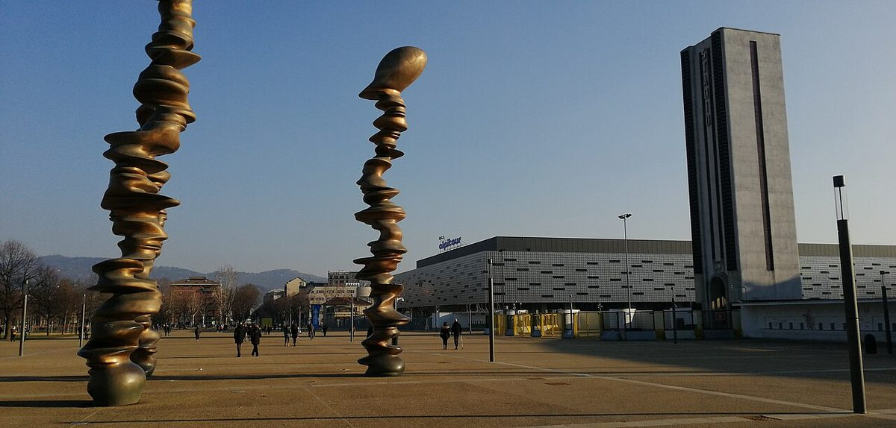

阿尔卡拉斯都灵力克兹维列夫 斩获个人首座ATP年终总决赛冠军
23岁的西班牙天才比肩阿加西、费德勒与德约科维奇，成为男子网坛历史上第四位集齐四大满贯和年终总决赛冠军的球员。

比赛回顾
2026年11月22日，星期日，都灵伊纳尔皮竞技场（Inalpi Arena），卡洛斯·阿尔卡拉斯在ATP年终总决赛男单争冠战中以6-2、7-6（9-7）力克世界第一亚历山大·兹维列夫。在这场耗时2小时01分钟的强强对话中，23岁的西班牙人先后四次破掉对手的发球局。进入第二盘抢七局，兹维列夫在开局落后的情况下顽强反扑，一度拿到三个盘点；但阿尔卡拉斯顶住压力全部化解，并在第二个冠军点上凭借一记反手制胜分锁定胜局，职业生涯首次捧起年终总决赛冠军奖杯。
载入史册的壮举

这场胜利让阿尔卡拉斯成为男子网球历史上仅有的第四位包揽全部四大满贯冠军和ATP年终总决赛冠军的球员，跻身安德烈·阿加西、罗杰·费德勒和诺瓦克·德约科维奇的传奇殿堂。年仅23岁的他，更是完成这一全满贯加年终壮举的最年轻男选手。都灵的这场决战也为2026赛季画上了一个极具戏剧性的句号：尽管兹维列夫夺得法网和美网桂冠并锁定年终世界第一，但在赛季终极收官之战中，笑到最后的依然是阿尔卡拉斯。“你已经是我们这项运动不折不扣的传奇了，而你才只有23岁，”兹维列夫在颁奖仪式上由衷地对阿尔卡拉斯说道。
关键数据与纪录
阿尔卡拉斯以5战全胜的不败战绩横扫本届赛事，在击败弗朗西斯·蒂亚福、丹尼尔·梅德韦杰夫、弗拉维奥·科博利（Flavio Cobolli）、本·谢尔顿以及兹维列夫的征程中仅丢一盘。凭借全胜夺冠的表现，西班牙人从高达1575万美元的总奖金池中独揽创纪录的517.1万美元巨奖，并斩获1500个ATP积分。
这座奖杯是阿尔卡拉斯职业生涯第30个巡回赛单打冠军，也是他2026赛季的第6冠——此前他在秋季连续攻下东京、维也纳和巴黎大师赛。尽管因右手腕伤势在春夏季缺阵长达四个半月，阿尔卡拉斯依然交出了47胜5负的耀眼赛季成绩单。兹维列夫则以69场胜利、10320个积分结束了2026年的征程，守住了年终世界第一宝座。

后续展望
随着都灵总决赛落幕，ATP巡回赛正式进入短暂的冬歇期，2027赛季将于明年1月在澳大利亚重燃战火。阿尔卡拉斯以世界第三结束本赛季，落后世界第二扬尼克·辛纳350分，紧随领跑的兹维列夫之后。辛纳此前因膝伤无缘都灵总决赛，并定于11月24日接受手术，预计他将在明年澳网与阿尔卡拉斯、兹维列夫一同重返赛场。